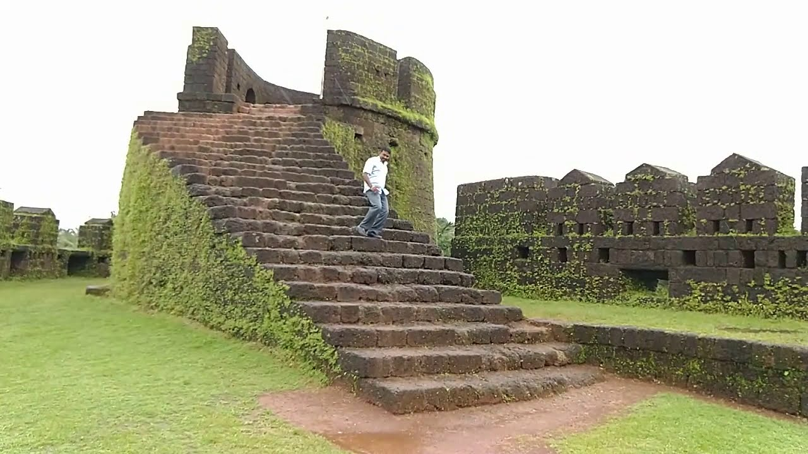
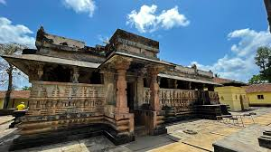
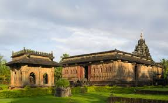
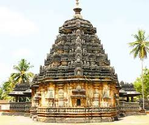
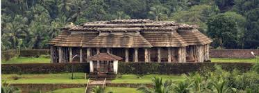

Shivappa Nayaka Palace
A historical palace built by Shivappa Nayaka, showcasing beautiful architecture and rich cultural heritage.

Nagara Fort (Bidanuru Fort, Keladi Shivappa Nayaka Fort)
A ruined yet majestic fort that once served as the capital of the Keladi Kingdom, offering panoramic views and historical significance.

Keladi (Rameshwara Temple - Historical Site)
A 16th-century temple built in the Keladi Nayaka era, known for its stunning Dravidian and Hoysala architectural blend.

Ikkeri (Aghoreshwara Temple - Historical Site)
A magnificent Shiva temple with intricate carvings, reflecting the grandeur of the Nayaka dynasty. .

Kaitabheshvara Koti Pura Temple
An ancient temple dedicated to Lord Shiva, renowned for its fine Chalukyan-style architecture.

Kanoor Fort
A hidden gem in the Western Ghats, this fort was once an important stronghold of the Keladi rulers and is now surrounded by dense forests, making it a trekker’s delight.